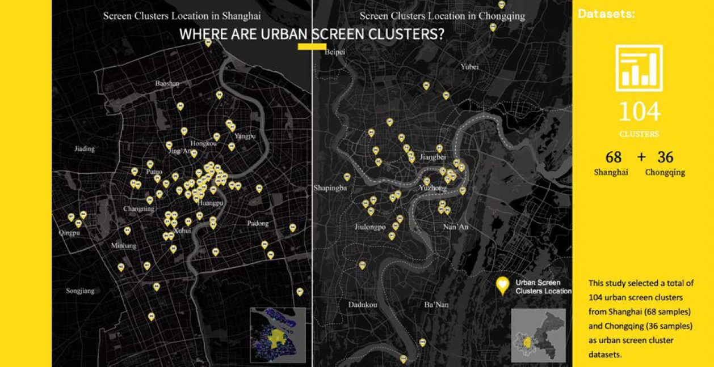

Machine Learning-driven Comparative Study: Morphological Taxonomy in Screen-Based Building Clusters
Our framework employs a convolutional autoencoder model to integrate urban morphology data and attribute vectors of screen-based buildings, generating final feature vectors that are subsequently used for clustering and comparative analysis. We carried out empirical testing of our methods using data from the cities of Chongqing and Shanghai in China. This comparative study identifies various categories of screen clusters, and demonstrates the framework’s effectiveness. The primary objective of this research is to elucidate the similarities and differences among screen-based building clusters, aiming to provide architects and urban designers with a more comprehensive understanding of the typological and topological characteristics of augmented space syntax. Through this approach, we hope to contribute to the development of more effective design strategies and policies for the implementation and integration of screen-based building clusters in urban environments.
Summary as recorded in CumInCAD.
